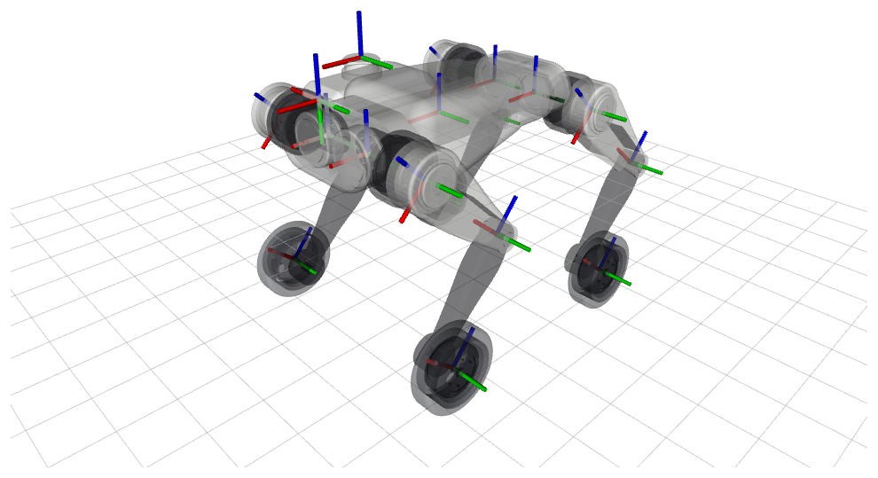
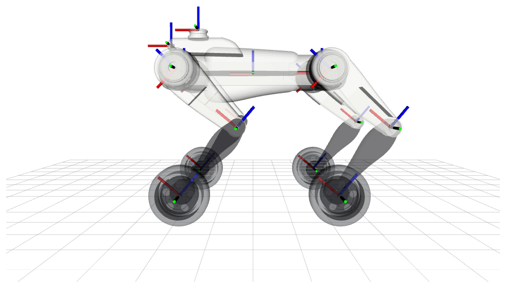
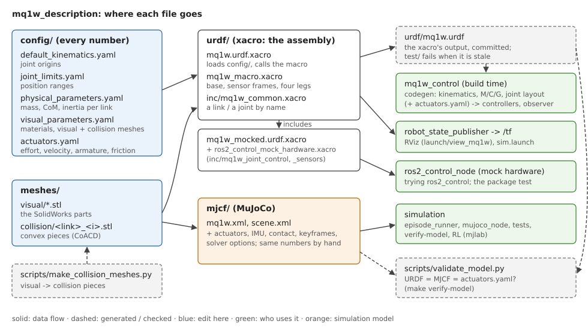

robots/mq1w — Đại Từ Điển Thiết Kế & Động Lực Học Bánh-Chân MQ1W
Cẩm nang toàn diện cho robot bốn chân bánh xe (16 DoF): Hình ảnh 3D renders thực tế, động học lăn không trượt, lái trượt Skid-Steering, tự nghiêng thân vào cua (Banking), thông số quán tính 17 khâu, ma trận 22 biến QP và mô phỏng tương tác thời gian thực.
🏎️ 1. Tổng Quan & Hình Ảnh Renders 3D MQ1W
MQ1W kết hợp ưu thế vượt trội của hai thế giới: Tốc độ cao, tiết kiệm năng lượng của robot bánh xe trên đường bằng, cùng khả năng vượt địa hình dốc, cầu thang và chướng ngại vật mấp mô của chân khớp đa bậc tự do.


Sơ Đồ Luồng Tệp Tin Mô Hình (Package Structure)

⚡ 2. Hệ 16 Động Cơ Unitree GO-M8010-6
Cả 16 khớp (kể cả 4 bánh xe) đều sử dụng chung một loại động cơ servo Unitree GO-M8010-6, tạo sự đồng nhất tuyệt đối về phụ tùng thay thế và điều khiển bus RS-485:
| Nhóm Khớp | Số Lượng | Tỷ số truyền | Mô-men cực đại $\tau_{\max}$ | Vận tốc góc tối đa | Quán tính Rotor phản ánh ($I_{\text{armature}}$) |
|---|---|---|---|---|---|
| Hip Joint | 4 | $6.33 : 1$ | 23.7 N·m |
30.1 rad/s |
0.0045 kg·m² |
| Thigh Joint | 4 | $6.33 : 1$ | 23.7 N·m |
30.1 rad/s |
0.0045 kg·m² |
| Calf Joint | 4 | $9.495 : 1$ ($6.33 \times 1.5$) | 35.6 N·m |
20.1 rad/s |
0.0102 kg·m² |
| Wheel Joint | 4 | $6.33 : 1$ (Trực tiếp) | 23.7 N·m |
30.1 rad/s |
0.0045 kg·m² |
⚖️ 3. Bảng Tra Cứu Thông Số Quán Tính 17 Khâu MQ1W
Số liệu từ config/physical_parameters.yaml. Khác với MQ1, cẳng chân (Calf) của MQ1W nặng hơn (0.75 kg) do mang theo vỏ gá động cơ bánh xe, và khâu bánh xe (Wheel) nặng 0.37 kg:
| Tên Khâu (Link) | Khối Lượng (kg) | Khối Tâm CoM $[x, y, z]$ (m) | Mô-men Quán Tính $[I_{xx}, I_{yy}, I_{zz}]$ ($\text{kg}\cdot\text{m}^2$) |
|---|---|---|---|
| base_link | 7.310 | [+0.01362, -0.00000, +0.00310] | [0.02443, 0.18511, 0.18835] |
| FL_hip / FR_hip | 0.930 | [-0.00192, ±0.06543, 0.00000] | [0.00137, 0.00091, 0.00132] |
| RL_hip / RR_hip | 0.930 | [+0.00192, ±0.06543, 0.00000] | [0.00137, 0.00091, 0.00132] |
| *_thigh (4 đùi) | 1.190 | [+0.00008, ±0.00067, -0.02898] | [0.00422, 0.00468, 0.00090] |
| *_calf (4 cẳng) | 0.750 | [+0.00033, ±0.02830, -0.18668] | [0.00393, 0.00390, 0.00066] |
| *_wheel (4 bánh) | 0.370 | [0.00000, ±0.00159, 0.00000] | [0.00076, 0.00138, 0.00076] |
🔄 4. Động Học Tiếp Xúc Lăn Bánh Xe (Rolling Contact Kinematics)
Khác biệt cốt lõi giữa chân điểm và bánh xe là tính chất Non-holonomic của tiếp xúc lăn:
🚗 5. Động Học Lái Trượt Vi Sai (Skid-Steering Kinematics)
Để quay robot với vận tốc góc $\omega_z$ quanh trục đứng, hai bên mạn bánh xe trái và phải phải quay với vận tốc khác nhau:
Vòng lặp hiệu chỉnh PI vận tốc góc (Yaw Rate PI Loop): $$\omega_{\text{cmd}} = \omega_z + K_p (\omega_z - \omega_{\text{actual}}) + K_i \int (\omega_z - \omega_{\text{actual}}) dt$$
🏎️ 6. Động Lực Học Tự Nghiêng Thân Vào Cua (Banking Dynamics)
Khi robot di chuyển ở tốc độ cao $v_x = 2.0\text{ m/s}$ và bẻ lái $\omega_z = 1.5\text{ rad/s}$, gia tốc ly tâm $a_y = v_x \omega_z = 3.0\text{ m/s}^2$ sinh ra mô-men lật nguy hiểm.
$$\text{Điều chỉnh chiều dài chân vi sai: } \Delta z_{\text{left}} = +\frac{W}{2} \sin(\phi_{\text{bank}}), \quad \Delta z_{\text{right}} = -\frac{W}{2} \sin(\phi_{\text{bank}})$$
📈 7. Không Gian Tư Thế MQ1W (Posture Envelope)

📂 8. Cấu Trúc Khai Báo URDF & Khớp Bánh Xe Liên Tục
Khác với 12 khớp chân có cữ chặn cơ học, 4 khớp bánh xe là dạng continuous (quay vô tận không giới hạn góc):
joint_limits:
# 12 khớp hông, đùi, cẳng: Giới hạn cơ học như MQ1
FL_hip_joint: {min: -0.6000, max: 0.6000}
FL_thigh_joint: {min: -1.5708, max: 3.4907}
FL_calf_joint: {min: -2.5500, max: -0.8400}
# 4 khớp bánh xe: Continuous
*_wheel_joint: {effort: 23.7, velocity: 30.1} # Không có min_position / max_position🕹️ 10. Trình Mô Phỏng Động Học Bánh-Chân Live
Điều chỉnh góc khớp chân và vận tốc bánh xe để quan sát cơ chế lăn bánh và góc nghiêng Banking: